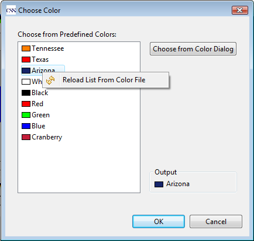

Color and Font macro allow you predefined some colors or fonts in separate text files. The path of the file can be specified in the preference page of BOY (open it from menu: CSS->Preferences...->CSS Applications->Display->BOY. A restart is needed to make changes take effect).
The format of color file would like this:
color_name1=red_value, green_value, blue_value color_name2=red_value, green_value, blue_value ...
For example:
red = 255,0,0 blue = 0,0,255 black = 0,0,0 white = 255,255,255

The format of font file would like this:
font_name1 = name-style-height font_name2 = name-style-height ...
For example:
Header = Aial-bold-18 Text = Arial-regular-10 LinkText = Arial-italic-10